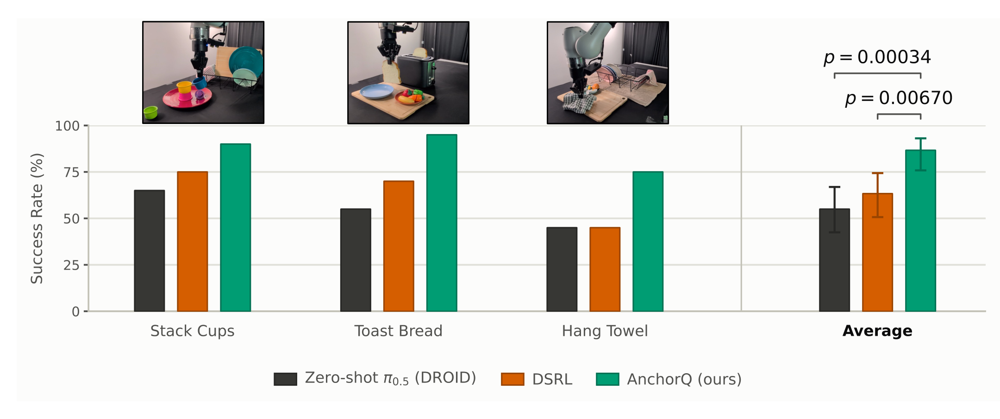

AnchorQ: Sample-Efficient Reinforcement Learning via Flow-Reversed Action Anchors
Anonymous submission
How does AnchorQ work?
Real-world results

Showing AnchorQ on Stack Cups.
Anonymous submission

Showing AnchorQ on Stack Cups.